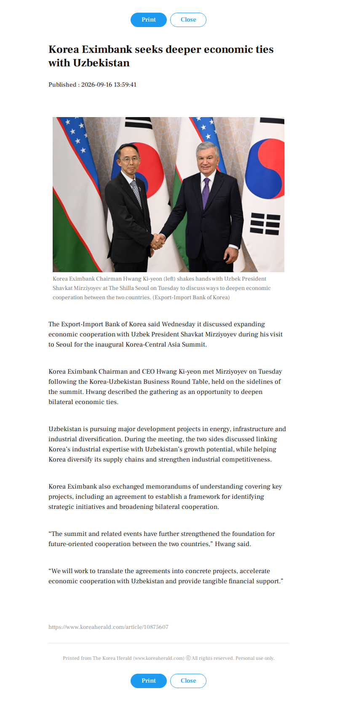

Reporting archive / The Korea Herald
Korea Eximbank seeks deeper economic ties with Uzbekistan

The image capture is unavailable. The article text is preserved below.
Read preserved article text
The Export-Import Bank of Korea said Wednesday it discussed expanding economic cooperation with Uzbek President Shavkat Mirziyoyev during his visit to Seoul for the inaugural Korea-Central Asia Summit.
Korea Eximbank Chairman and CEO Hwang Ki-yeon met Mirziyoyev on Tuesday following the Korea-Uzbekistan Business Round Table, held on the sidelines of the summit. Hwang described the gathering as an opportunity to deepen bilateral economic ties.
Uzbekistan is pursuing major development projects in energy, infrastructure and industrial diversification. During the meeting, the two sides discussed linking Korea's industrial expertise with Uzbekistan's growth potential, while helping Korea diversify its supply chains and strengthen industrial competitiveness.
Korea Eximbank also exchanged memorandums of understanding covering key projects, including an agreement to establish a framework for identifying strategic initiatives and broadening bilateral cooperation.
“The summit and related events have further strengthened the foundation for future-oriented cooperation between the two countries,” Hwang said.
“We will work to translate the agreements into concrete projects, accelerate economic cooperation with Uzbekistan and provide tangible financial support.”